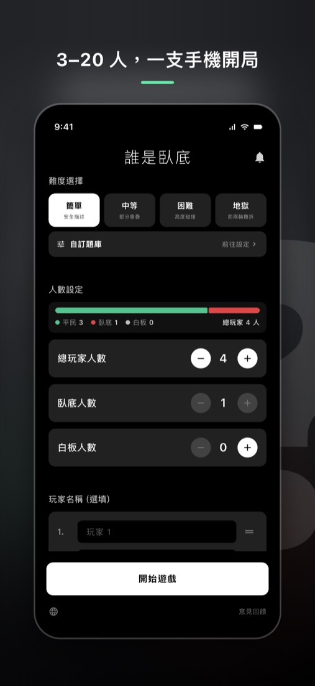
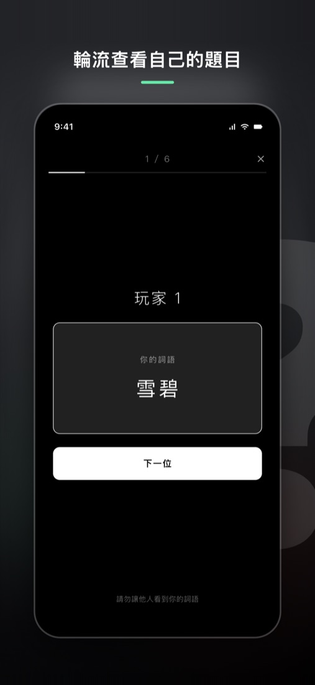
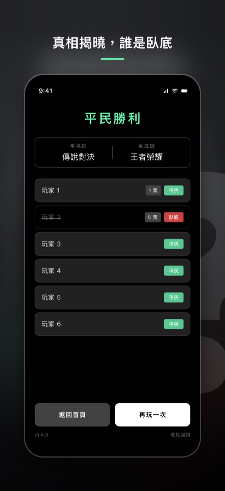

誰是臥底
一支手機輪流傳的派對遊戲
大家拿到相似的詞，只有臥底的詞不一樣。輪流用一句話描述、投票找出臥底——3 到 20 人、不用連網，聚餐、尾牙、團康破冰都能馬上開一局。
在 App Store 下載


誰是臥底怎麼玩
每個人都會拿到一個詞，其中少數人的詞和其他人很相似，但不一樣。拿到相同詞的是「平民」，拿到不同詞的是「臥底」。大家輪流描述自己的詞，從彼此的描述中找出藏在裡面的臥底。
- 設定總人數、臥底與白板人數，按「開始遊戲」。
- 把手機輪流交給每位玩家，點一下查看自己的詞語，看完隱藏後交給下一位。
- 依發言順序，每人用一句話描述自己的詞，但不能直接說出詞語。
- 每輪描述完就投票，淘汰最可疑的人。
- 重複描述與投票，直到一方獲勝。
例如平民拿到「海豹」，臥底拿到「海狗」：說「住在海邊」兩邊都對，說「會拍手」就可能露出馬腳。
三種角色
- 平民：大家拿到同一個詞，要從描述中找出誰是臥底。
- 臥底：拿到一個相近但不同的詞，要隱藏身分、撐到最後。一開始臥底不知道自己是臥底，要從別人的描述發現。
- 白板：沒有拿到詞，要聽別人的描述猜出詞語並混過去。白板和平民同一隊；在主持人投票模式被投出時，可以猜一次平民的詞，猜中就獨自獲勝。
勝負
- 臥底全部被淘汰，平民獲勝。
- 存活的臥底人數大於或等於平民加白板時，臥底獲勝。
幾個人玩？臥底要放幾個
App 支援 3 到 20 人，臥底人數必須少於總人數的一半，白板最多 2 人。下面是常見的配置，第一次玩可以照這個開：
| 人數 | 臥底 | 白板 |
|---|---|---|
| 3–5 人 | 1 | 0 |
| 6–8 人 | 1–2 | 0–1 |
| 9–12 人 | 2–3 | 1 |
| 13–20 人 | 3–5 | 1–2 |
臥底越多、詞越接近，平民越難贏；想讓局面平衡，先調整難度再調臥底人數。
題目難度與範例
內建 2,034 組題目，分四種難度，也可以自己出題：
| 難度 | 兩個詞的差別 | 範例 |
|---|---|---|
| 簡單 | 差異明顯 | 打雷／閃電、夜市／市集 |
| 中等 | 有部分重疊 | 信封／明信片、報紙／雜誌 |
| 困難 | 兩個詞很接近 | 悠遊卡／信用卡、口香糖／軟糖 |
| 地獄 | 前兩輪幾乎分不出來 | 信封／紅包、外送員／快遞 |
朋友之間的梗、公司或班上的人名事物，可以在「自訂題庫」自己新增，開局只會從你建立的題目出題。
兩種投票方式
主持人投票
大家當面討論或舉手表決，再由拿手機的人點選要淘汰的玩家。節奏快，適合面對面的聚會。白板被投出時可以猜詞。
輪流秘密投票
手機依序交給每位存活玩家秘密投票，最高票的人淘汰。平票時由其他玩家在平票者之間再投一次，仍平票就隨機淘汰其中一人。適合不想當面表態的時候。
適合什麼場合
朋友聚會、家庭聚餐、過年團圓、公司尾牙、迎新、營隊團康、班級活動、露營夜晚。不需要道具、不用每個人都裝 App，一支手機傳下去就能玩；不用連網，山上或地下室也能開。
費用
下載免費，每個難度可以先玩 30 題，自訂題庫不用付費。購買完整版是一次買斷，解鎖全部題目並移除廣告；換手機在 App 內按「恢復購買」就能找回。
常見問題
描述時有什麼規則？
不能直接說出詞語。建議也不要說出詞裡的字或直接翻譯成外語，否則太容易被猜到。
白板被淘汰會怎樣？
主持人投票模式下，白板被投出時可以打字猜一次平民的詞：猜中就由白板獨自獲勝，平民和臥底都算輸；猜錯就出局、遊戲繼續，畫面不會透露答案。輪流投票模式沒有猜詞，白板被淘汰就直接出局。
誰是臥底和 Undercover、Imposter、ワードウルフ 是同一種遊戲嗎？
是同一類。誰是臥底源自中國的聚會遊戲，英文常叫 Undercover 或 word imposter game，日本叫ワードウルフ（ワード人狼）。核心都是「少數人拿到相似但不同的詞」，臥底一開始也不知道自己是臥底，要從別人的描述發現。和狼人殺不同，誰是臥底不需要法官、不分夜晚白天，一支手機就能開局。
每個人都要下載 App 嗎？
不用。只要一支手機，輪流傳給每個人看自己的詞就可以。
發言順序怎麼決定？
可以選「順序」或「全隨機」。「順序」依座位輪流發言，每局隨機決定往哪個方向；「全隨機」每局把發言順序完全打亂。
有 Android 版嗎？
Android 版準備中，上架後會在這裡放 Google Play 連結。